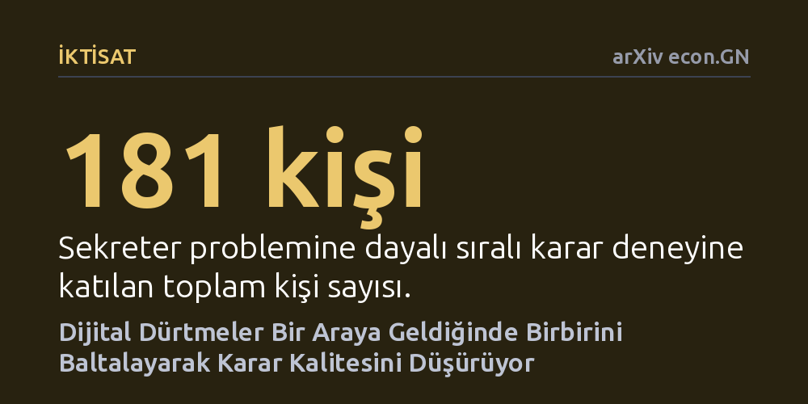

IKTISAT · arXiv econ.GN · 2026-10-22
Araştırmacılar, dijital arayüzlerdeki çıpalama, belirginlik ve sosyal kanıt dürtmelerinin tekil ve birleşik etkilerini 181 katılımcıyla test etti. Çıpalama keşif süresini uzatırken, dürtmelerin üst üste bindiği durumlarda karar kalitesinin belirgin şekilde düştüğü saptandı.
İnternet sitelerindeki yönlendirici tasarım ögelerinin her zaman kullanıcı yararına çalışmadığını, aksine üst üste bindiklerinde aldığımız kararların kalitesini bozabileceğini gösteriyor.

İnternette alışveriş yaparken, otel rezervasyonu tamamlarken ya da bir dijital abonelik seçerken karşımıza sürekli küçük yönlendirici ipuçları çıkar. Davranışsal iktisat literatüründe 'dürtme' (nudge) olarak adlandırılan bu ögeler; 'kullanıcıların yüzde 80'i bunu seçti', 'son 2 oda kaldı' veya varsayılan olarak işaretlenmiş paketler şeklinde sunulur. Buradaki temel felsefe, bireyin seçim özgürlüğünü doğrudan kısıtlamadan veya seçenekleri yasaklamadan, arayüz mimarisini kullanarak onu belirli bir yöne teşvik etmektir.
Günümüz dijital platformlarında bu dürtmeler neredeyse hiçbir zaman tek başına sunulmaz. Kullanıcı bir web sayfasına girdiğinde aynı anda hem bir indirim sayacıyla hem popülerlik rozetiyle hem de tavsiye edilen başlangıç fiyatıyla karşılaşır. Ancak davranış bilimciler bugüne kadar dürtmeleri çoğunlukla yalıtılmış laboratuvar ortamlarında ve tekil olarak inceledi. Bu yönlendirmelerin dijital katmanlar halinde bir araya geldiğinde insan zihninde nasıl bir etkileşime yol açtığı ve kararlarımızın kalitesini nasıl değiştirdiği ise büyük oranda bilinmiyordu.
Araştırmacılar bu soruya yanıt bulabilmek için karar teorisinin klasik modellerinden biri olan 'sekreter problemi'ne dayalı sıralı bir karar oyunu kurguladı. Bu senaryoda birey, karşısına teker teker çıkan seçenekleri inceler ve geri dönüp eski bir seçeneği tercih etme şansı bulunmaz. Dolayısıyla başarı, ne zaman yeni bir seçenek aramayı bırakıp eldeki alternatife razı gelineceğini doğru kestirmeye bağlıdır.
Çalışmada toplam 181 katılımcı, 2x2x2 faktöriyel denekler arası deney tasarımına tabi tutularak sekiz farklı gruptan birine rastgele atandı. Deney ortamında üç farklı dijital dürtme türü bağımsız ve birleşik olarak test edildi: karar için bir referans noktası sunan çıpalama (anchor), belirli bir bilgiyi görsel olarak öne çıkaran belirginlik (salience) ve başkalarının tercihlerini aktaran sosyal kanıt (social proof). Katılımcıların ne kadar süre arayışa devam ettiği ve oyun sonucunda elde ettikleri parasal getiri hassas biçimde ölçüldü.
Deney sonuçları, dijital dürtmelerin birlikte kullanımına dair yerleşik kabulleri sarsan çarpıcı bulgular ortaya koydu. İlk olarak, çıpalama dürtüsü katılımcıların arama davranışını kısıtlayıp onları aceleci bir tercihe zorlamak yerine, tam tersine keşif süresini istatistiksel olarak anlamlı biçimde artırdı (b = 1,207, p = 0,017). Diğer yandan belirginlik dürtüsü, incelenen tüm koşullar arasında katılımcı davranışı üzerinde en düşük etkiyi gösteren öge oldu.
En kritik bulgu ise dürtmelerin birleşik etkisinde görüldü. Çıpalama ile sosyal kanıt dürtülerinin bir arada sunulduğu grup, ortalama 181,83 dolarlık kazançla deneydeki en düşük karar kalitesini sergiledi; oysa yalnızca çıpalama gören katılımcılar 192,21 dolarlık getiri sağlamıştı. Dahası, arayüzdeki dürtme sayısı arttıkça kullanıcıların elde ettiği sonuç kalitesinin düzenli olarak gerilediği saptandı. Araştırmacılar bu olguyu, dürtmelerin birikerek bilişsel aşırı yüke yol açması ve birbirlerinin işlevini zayıflatması anlamına gelen bir 'dijital dürtme dışlama etkisi' olarak nitelendiriyor.
Elde edilen bulgular, modern web tasarımındaki 'ne kadar çok ikna edici öge eklenirse kullanıcı o kadar iyi yönlendirilir' anlayışının hatalı olabileceğini gösteriyor. Arayüz tasarımcıları kullanıcıyı desteklemek amacıyla birden fazla yönlendirmeyi üst üste yığdığında, karar vericinin zihinsel kapasitesi zorlanıyor ve doğru anda doğru seçimi yapma becerisi sekteye uğruyor.
Bu çalışma, katmanlı seçim mimarilerinin etik boyutuna dikkat çekerek arayüzlerin kullanıcılara fark ettirmeden zarar verici sonuçlar doğurabileceğine dair ilk kontrollü kanıtı sunuyor. Yine de araştırmanın henüz hakem denetiminden geçmemiş bir önbaskı olduğunu, sınırlı bir katılımcı grubuyla yürütüldüğünü ve bulguların gerçek hayat e-ticaret sitelerindeki daha karmaşık senaryolarda bağımsız çalışmalarla doğrulanması gerektiğini akılda tutmak gerekiyor.